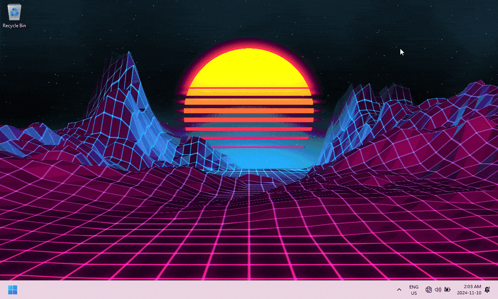
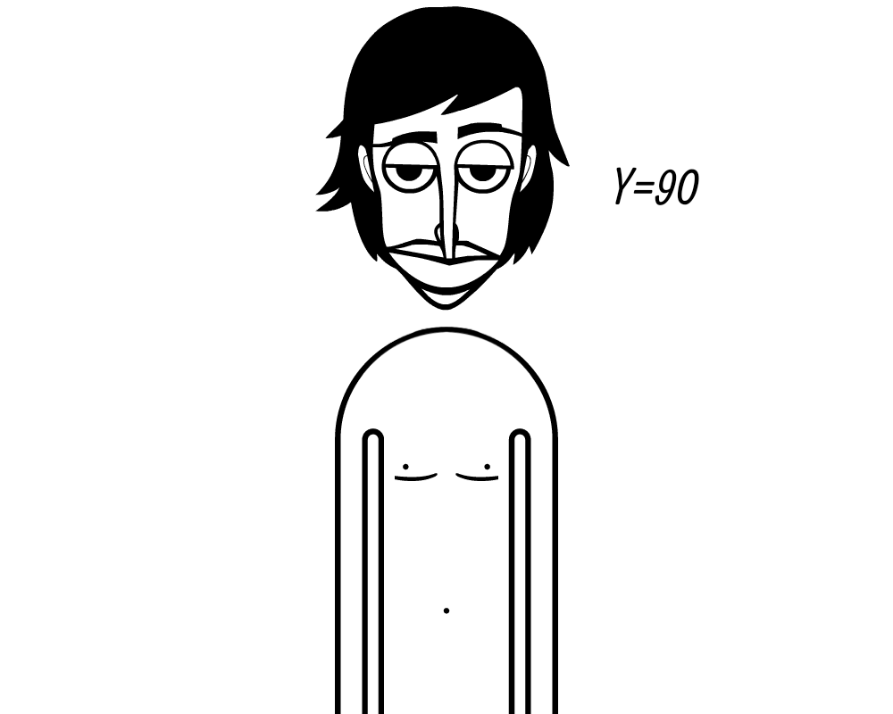

Welcome to the Image Showcase!
Click on the links above to view each image and its details.
A-Cat.jpg

Description: This image shows a charming cat lounging comfortably outside on the streets.
File Type: JPEG (compressed image format).
Why I Chose It: Cats are adorable and my favorite species! Cats are beloved pets known for their independent and playful nature.
Source: Image sourced from a personal photography collection.
Wallpaper GIF

Description: This animated GIF showcases a dynamic desktop wallpaper from Wallpaper Engine running on Windows 11.
File Type: GIF (Graphics Interchange Format) supports both static and animated images.
Why I Chose It: It looks cool! Adding animated wallpapers gives the user interface a more unique feel.
Source: Image captured from Wallpaper Engine application on Windows 11.
Digital Artwork

Description: A black and white digital painting of incredibox man.
File Type: PNG (Portable Network Graphics) supports lossless compression and transparent backgrounds.
Why I Chose It: Incredibox has been apart of my middle school memories!
Source: Online digital artist named NightmareFred2058 on DevianArt.